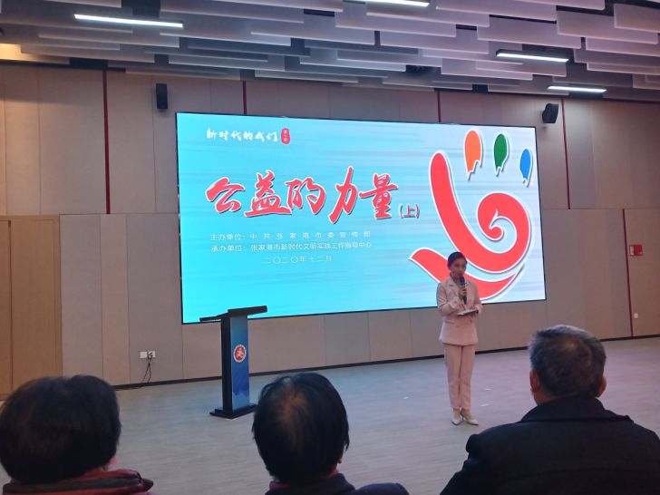

【信息发布时间：2020-12-09阅读次数：】 【我要打印】 【关闭】
“追梦讲堂·新时代的我们”主题活动于12月8日下午在文化中心召开，本期讲座主题是公益的力量，我中心组织人员参加了本次活动。
讲座开始前，主持人先简单介绍了关于张家港的公益情况，紧接着便由张家港三位杰出的公益活动代表带来精彩演讲。讲座内容主要包括松田种业的杨继峰及他的奋斗史、塘桥苗圃的成长史以及金港镇王明华及其家人的爱心善举。三位主讲人对这几个问题结合个人经验进行了深入剖析和探讨。本次讲座彰显了公益行为对社会产生的重要力量及意义，激励每一位参会人员在现实困境中坚持信念，迎难而上。
通过此次学习，中心人员充分认识到社会公益事业是一项艰难而伟大的社会性事业，需要社会全体成员投身其中。同时，它在开展和运作过程之中离不开信息的传递和交换，这就更加需要全体社会成员共同努力、协助配合，搭建起更多向不同社会群体传播公益信息、传递公益力量的桥梁和渠道。
